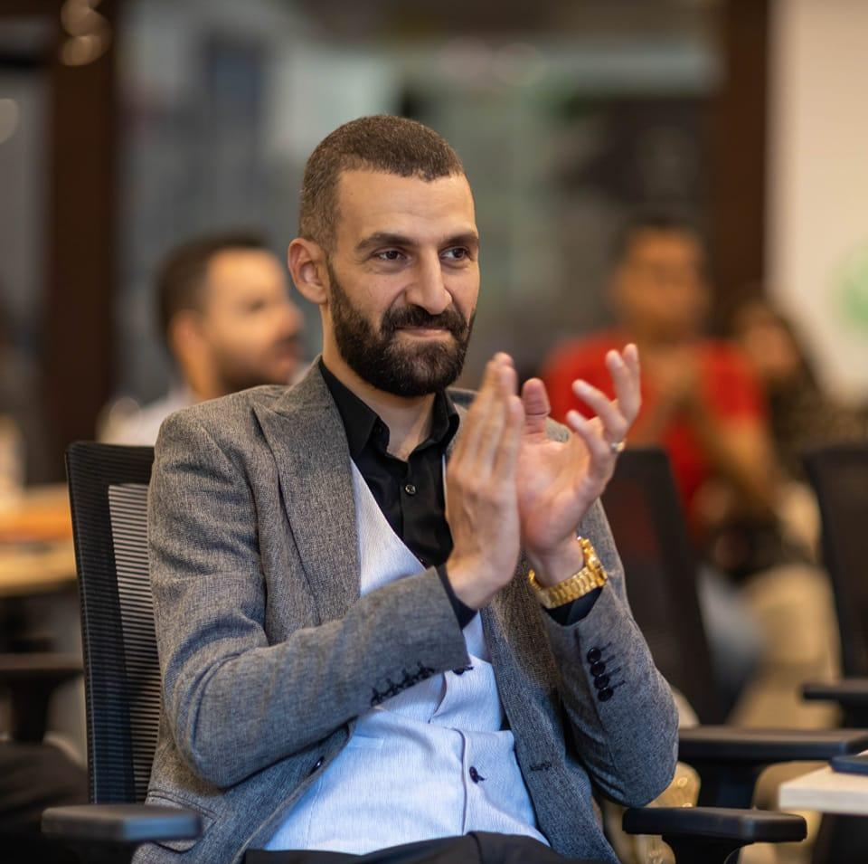

Ramy AL Sorogy

Full Stack Software Engineer | ALX Graduate
Summary
Dynamic and detail-oriented Full Stack Software Engineer with hands-on experience in developing scalable web
applications.
ALX Full Stack Software Engineering Program graduate with strong skills in:
- JavaScript.
- Python.
- Modern Web Technologies.
Education
- ALX Full Stack Software Engineering Program, ALX, 2023-2024
Work Experience
-
Full Stack Software Engineer at Tech Solutions Ltd., 2020-2023
- Led development efforts for high-traffic e-commerce platforms using React.js and Node.js.
- Designed and implemented RESTful APIs.
- Improving Backend Performance by 30%. Collaborated closely with UI/UX Designers to Enhance User
Interface and Experience.
-
Backend Developer at Innovate Tech, 2018-2020
- Developed microservices architecture using Python and Flask.
- Reducing API Response times by 40%. Implemented Automated Testing and CI/CD Pipelines
- Ensuring Robust Deployment Processes.
- Mentored Junior Developers in Best Practices and Code Reviews.
-
Software Developer Intern at XYZ Startups, Summer 2017
- Assisted in the Development of a scalable SaaS platform using AngularJS and MongoDB.
- Implemented new features and optimized database queries, contributing to a 20% increase in platform
efficiency.
skills
- Proficient in JavaScript, Python, HTML/CSS
- Experience with React.js and Django frameworks
- Strong understanding of database management systems
Awards and Certifications
- Certificate of Completion, ALX Full Stack Software Engineering Program
- Certificate of Completion, ALX AICE Program
- Certificate of Completion, ALX Virtual Assistance Program